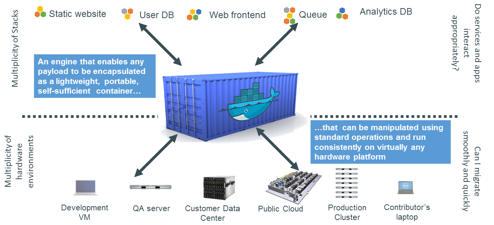

An Introduction to Docker
l2
A brief talk by James
Disclaimer

-
Most of this talk was scaveneged from these Docker Slides
- Hopefully most of this is correct - I'm still pretty new to docker
The Challenge




Why Developers Care
- A clean, safe, hygienic, portable runtime environment for your app.
- No worries about missing dependencies, packages and other pain points during subsequent deployments.
- Run each app in its own isolated container, so you can run various versions of libraries and other dependencies for each app without worrying.
- Automate testing, integration, packaging.
- Reduce/eliminate concerns about compatibility on different platforms, either your own or your customers.
- Cheap, zero-penalty containers to deploy services. Instant replay and reset of image snapshots.
(3.2+ generally or 2.6.32+ for RHEL 6.5+, Fedora, & related)
Why Administrators Care
- Make the entire lifecycle more efficient, consistent, and repeatable
- Increase the quality of code produced by developers.
- Eliminate inconsistencies between development, test, production, and customer environments.
- Support segregation of duties.
- Significantly improves the speed and reliability of continuous deployment and continuous integration systems.
- Because the containers are so lightweight, address significant performance, costs, deployment, and portability issues normally associated with VMs.
Why it Works: Separation of Concerns

More Technical Details
Why
- Run everywhere
- Regardless of kernel version
- Regardless of host distro
- Physical or virtual, cloud or not
- Container and host architecture must match...
- Run anything
- If it can run on the host, it can run in the container
- If it can run on a Linux kernel, it can run
What
- High level: a lightweight VM
- Own process space
- Own network interface
- Can run stuff as root
- Can have its own /sbin/init (different from host)
- <<machine container>>
- Low level: chroot on steroids
- Can also not have its own /sbin/init
- Container = isolated processes
- Share kernel with host
- No device emulation
- <<application container>>
How it Works: Linux Containers (LXC)

- OS-level virtualization via a virtual environment that has its own process and network space
- cgroups and kernel namespace isolation released in 2.6.24
- Docker typically uses LXC (I think) for virtualization
How it Works: Linux Containers (LXC)
- Originally written internally by dotCloud.
- Now an open source project and commercial entity, as far as I can tell.
VMs vs Containers

Why are Docker Containers Lightweight?

What are the Basics of a Docker System?

Basic workflow
Create a Dockerfile
FROM debian:8.0
# Install systems
RUN apt-get update; apt-get install procps -yy
...
Build an image
$ docker build -t "james/docker-reveal-test.js:latest" .Pushing the image
$ docker push james/docker-reveal-test.jsRunning the container
$ docker run -d -p 8888:8000 -v $(pwd):/slides/ "james/docker-reveal-test.js:latest"View presentation
View at http://$(boot2docker ip):8888Changes and Updates

Docker Basics
- Image
- Registry
- Container
Demo
Local Web Development
Local Distributed System / Cluster
Running + TestingExample: Kafka Cluster
kafka-dockerdocker-compose
Start the cluster
$ docker-compose upScale cluster
$ docker-compose scale kafka=5
Get a shell
$ start-kafka-shell.sh Create topic and start producer
$ $KAFKA_HOME/bin/kafka-topics.sh --create --topic topic \
--partitions 4 --zookeeper $ZK --replication-factor 2
$ $KAFKA_HOME/bin/kafka-topics.sh --describe --topic topic --zookeeper $ZK
$ $KAFKA_HOME/bin/kafka-console-producer.sh --topic=topic \
--broker-list=`broker-list.sh`
Start another shell, and consume
$ $KAFKA_HOME/bin/kafka-console-consumer.sh --topic=topic --zookeeper=$ZKIdea: Simulate network failures
Similar to the Jepsen series.
For docker, there is blockade.
Local blockchain systems
Example: Bitcoin Test Network
Get code for presentation, on gh-pages branch, and enter bitcoin dir
$ cd bitcoinBuild images
$ make buildStart up two bitcoin nodes/containers, in separate terminals
$ make alice_shell$ make bob_shellStartup bitcoin daemon in both
$ startupGet information
$ getinfoGet network peers - there should be none
$ getpeerinfoTry connecting on network - peerinfo should be populated now
$ tryconnectCheck balance
$ getbalanceMine some blocks, in either terminal
$ mine 101Balance should have changed, generate new address to receive payment
$ getnewaddressSend bitcoins to new address
$ sendtoaddress $address $amtMine some blocks for verification, check balances after
$ mine 4Ecosystem Support
- Operating systems
- Virtually any distribution with a 2.6.32+ kernel
- Red Hat/Docker collaboration to make work across RHEL 6.4+, Fedora, and other members of the family (2.6.32 +)
- CoreOS—Small core OS purpose built with Docker
- Private PaaS
- OpenShift, Solum (Rackspace, OpenStack), Other TBA
- Public PaaS
- Deis, Voxoz, Cocaine (Yandex), Baidu PaaS
- Public IaaS
- Native support in Rackspace, Digital Ocean,+++
- AMI (or equivalent) available for AWS & other
- DevOps Tools
- Integrations with Chef, Puppet, Jenkins, Travis, Salt, Ansible +++
- Orchestration tools
- Mesos, Heat, ++
- Shipyard & others purpose built for Docker
- Applications
- 1000’s of Dockerized applications available at index.docker.io
Pretty Code
function linkify( selector ) {
if( supports3DTransforms ) {
var nodes = document.querySelectorAll( selector );
for( var i = 0, len = nodes.length; i < len; i++ ) {
var node = nodes[i];
if( !node.className ) {
node.className += ' roll';
}
}
}
}
Code syntax highlighting courtesy of highlight.js.
Speaker View
There's a speaker view. It includes a timer, preview of the upcoming slide as well as your speaker notes.
Press the S key to try it out.